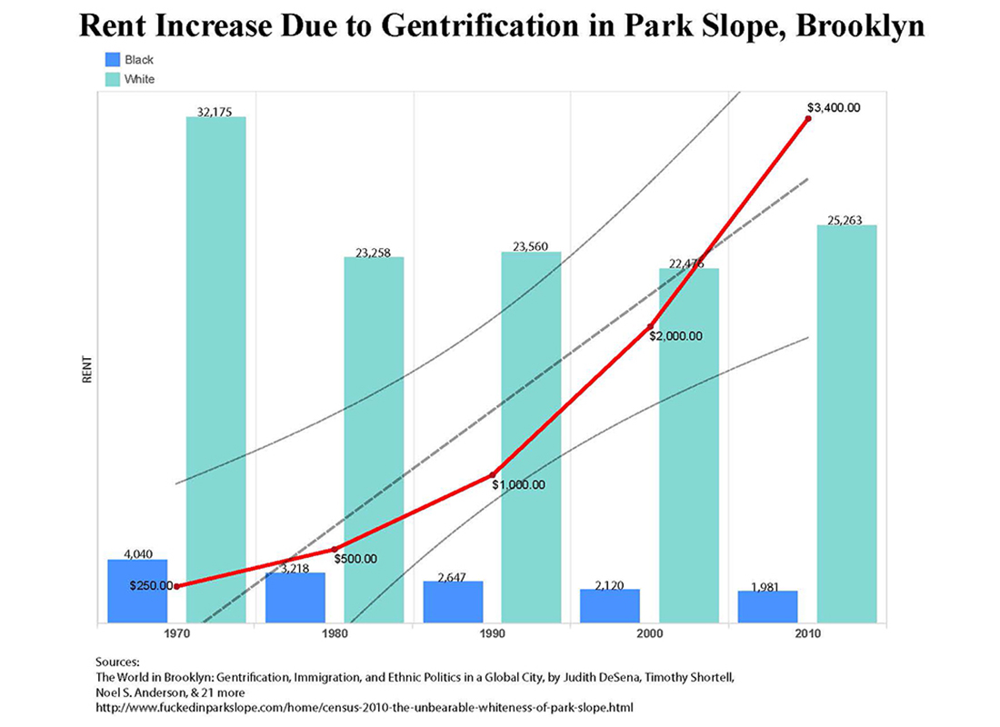
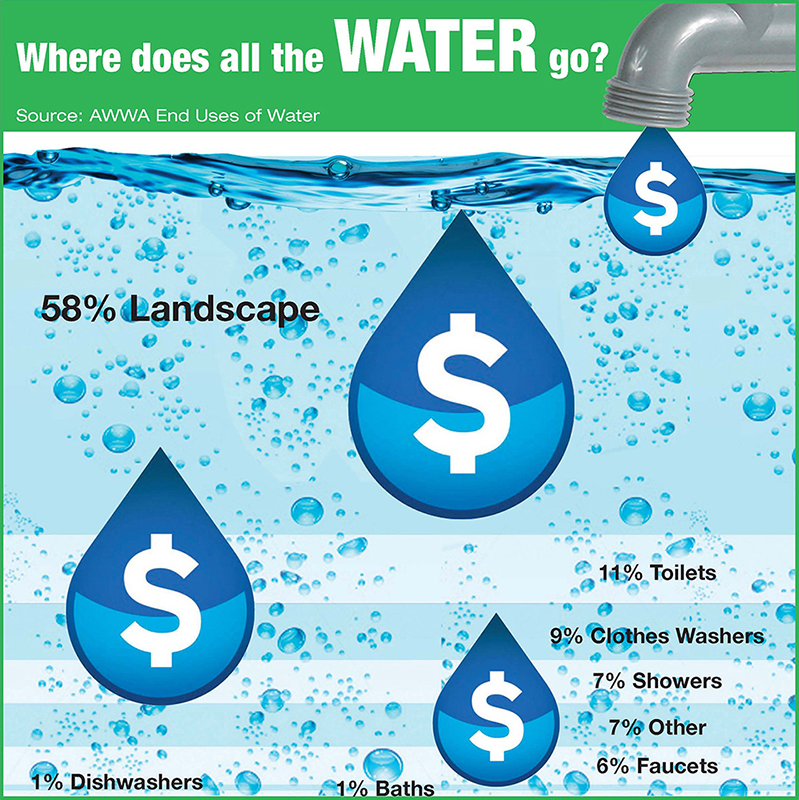
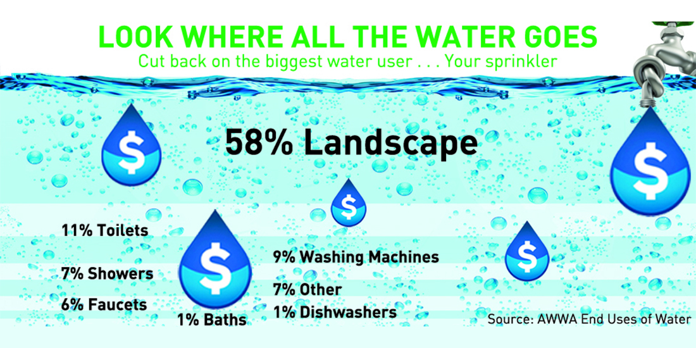
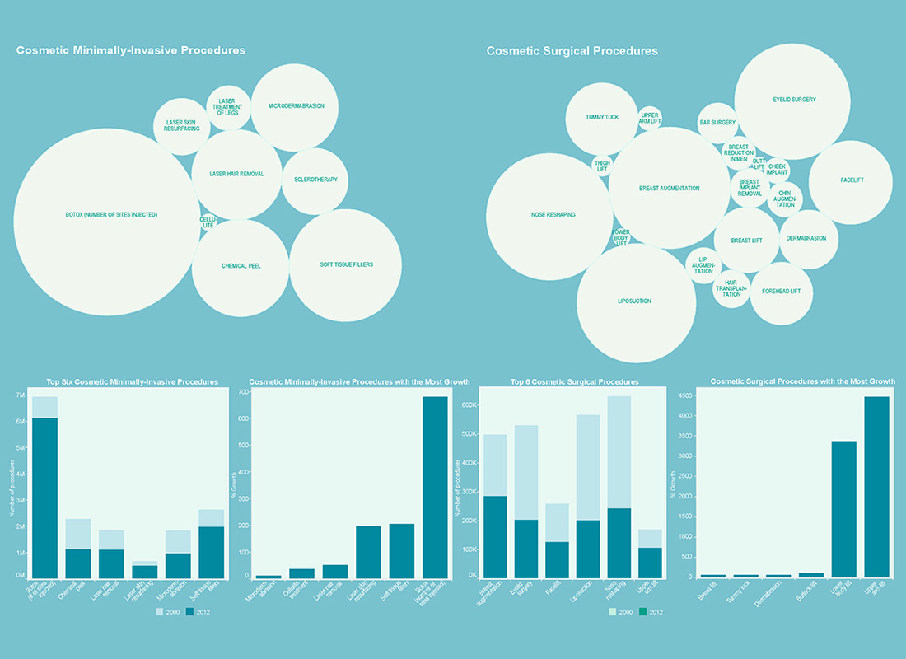
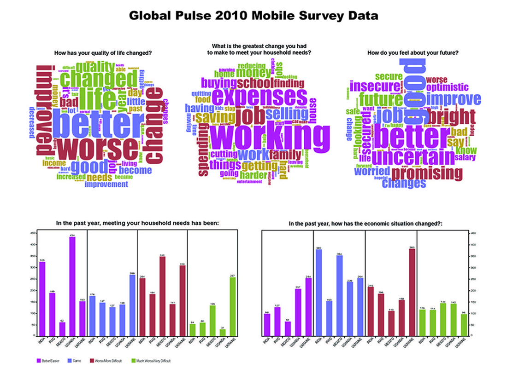
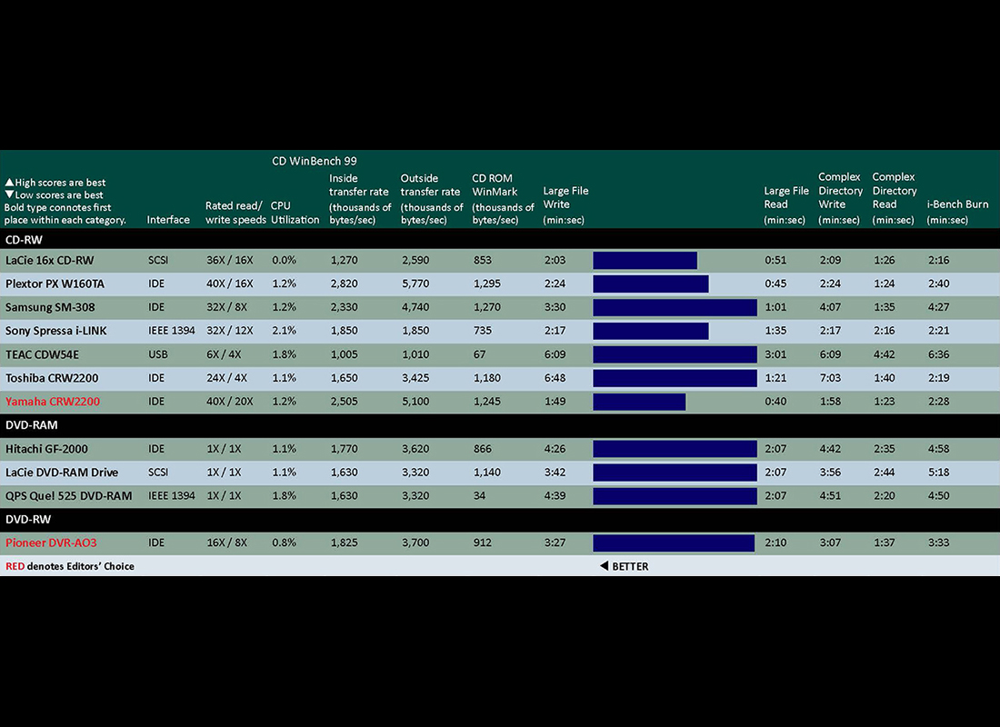

This was created using Tableau and tweaked in Illustrator.

This is an infographic. Even though it is based on data, each point of the image does not correlate to a data point.

This is an infographic. Even though it is based on data, each point of the image does not correlate to a data point.

This uses bubble charts as well as bar charts and covers the explosive growth of cosmetic procedures, both invasive and noninvasive.

Word clouds have been widely embraced by many industries. They are used so the main subject matters of a large volume of text (or a small one, as in resumes and cover letters) can be discerned.

This was created at the beginning of my career when the term "data visualization" was not commonly heard. At the time this was simply called a chart.